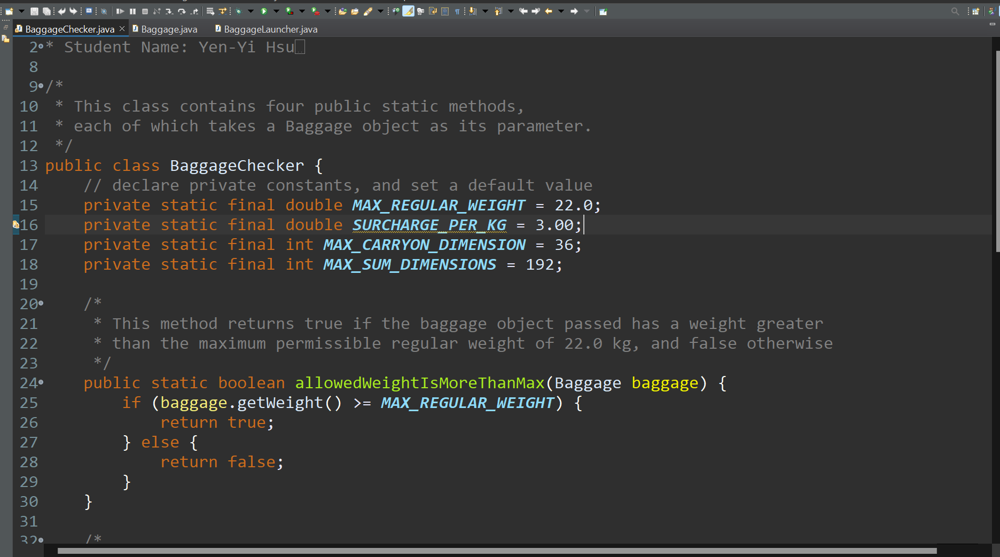
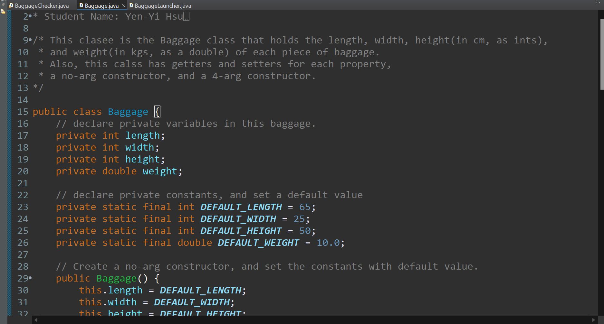
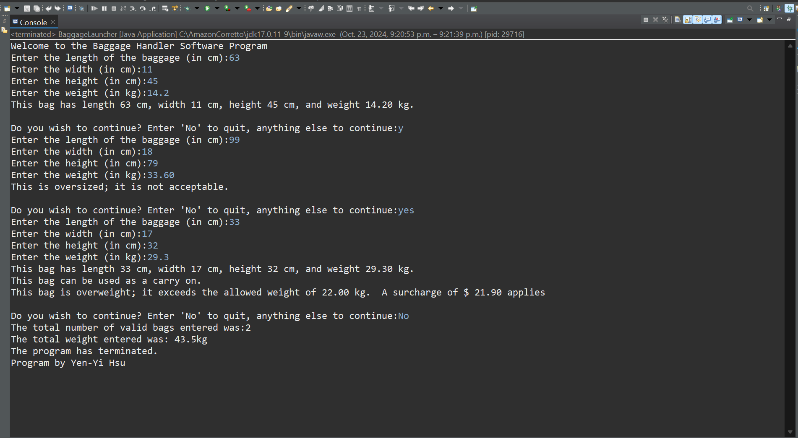
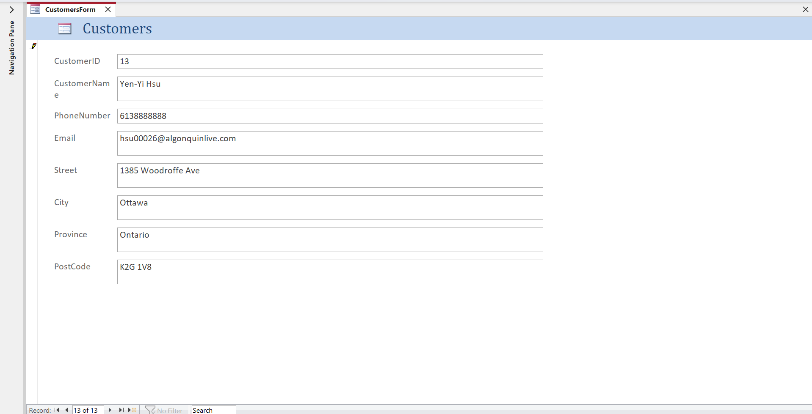
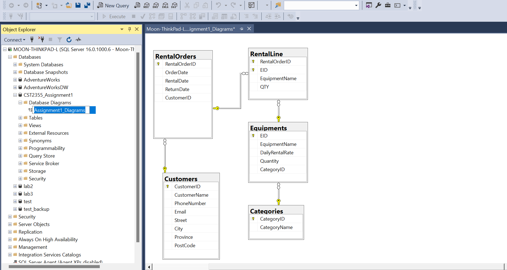

Project 1
-
Java Project - Baggage Checking Software
- Designed a program with four classes to determine baggage fees for a set of baggage.
- Learned how and when to write a utility class to provide necessary functions to users with decisions and loops.



Project 2
-
Database Group Project - SKI EQUIPMENT RENTAL MANAGEMENT
- Designed to efficiently track customer information and manage ski equipment rentals, ensuring that customer data is accurately recorded and accessible.
- Utilized database systems, MS-Access, and SQL Server to build a functional front end.


Project 3
-
Java Project - Electronic Health Records (EHR)
- Created a Java project with three key classes: MyHealthData, MyHealthDataBase, and MyHealthDataTest, using object-oriented programming principles and inheritance concepts.
- MyHealthData class was designed to store and manage key patient health information, initialized via a constructor with relevant parameters, while inheriting from MyHealthDataBase.
- Developed MyHealthDataTest2 using JUnit to perform testing of the MyHealthData class, using JUnit for efficient unit testing.
- Generated Javadoc documentation for the entire project, ensuring clear and maintainable code structure.